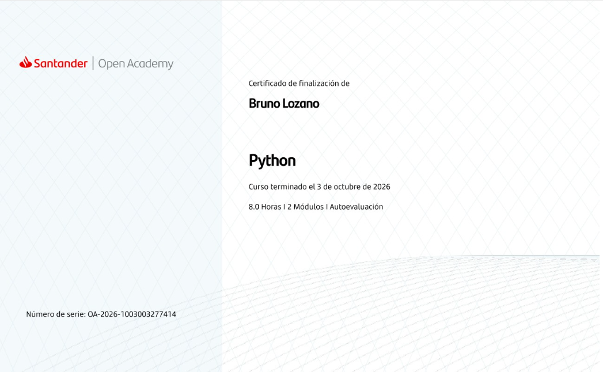
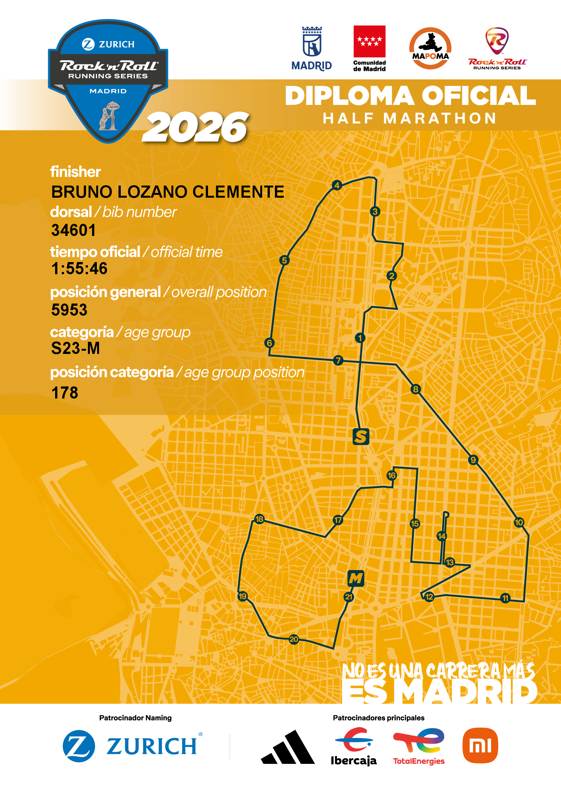

Match4ll
Desarrollé (durante 4 meses con un equipo de tres estudiantes) una aplicación web para la gestión de competiciones y equipos de fútbol utilizando Java y Spring Boot, junto con JavaScript, HTML y CSS.
- Java
- Spring Boot
- JavaScript
- HTML
- CSS
Acerca de mí
Soy Bruno, estudiante de último año de Ingeniería de Computadores en la Universidad Complutense de Madrid.
Tengo un gran interés tanto en el desarrollo hardware como software. Además, me apasionan áreas como el desarrollo web,
la róbotica, la programación a bajo nivel y la Inteligencia Artificial.
Durante mis estudios he consolidado el manejo de lenguajes de programación como C/C++, Java/JavaScript y VHDL entre otros.
Además, domino el español de forma nativa y tengo un nivel intermedio de inglés (B2), que me permiten entender documentación específica, así como comunicarme con personas internacionales.
Fuera de la pantalla, soy apasionado del deporte. Preparar y terminar una media maratón me ha enseñado que los grandes retos necesitan de constancia, responsabilidad, compromiso y capacidad analítica.
Actualmente me encuentro en búsqueda de una empresa donde realizar
prácticas curriculares, adentrarme al mundo laboral y aplicar lo aprendido en un entorno real, mientras continúo con mi formación académica.
Proyectos
Desarrollé (durante 4 meses con un equipo de tres estudiantes) una aplicación web para la gestión de competiciones y equipos de fútbol utilizando Java y Spring Boot, junto con JavaScript, HTML y CSS.
Desarrollé en C un robot móvil autónomo sobre una Raspberry Pi 3, integrando sensores CNY70 y GP2Y0A41SK0F para implementar seguimiento de línea y detección/evasión de obstáculos.
Implementé en C un sistema de gestión para un parquímetro, utilizando UART y emulación de hardware para gestionar plazas numeradas, controlar el tiempo de estacionamiento y procesar pagos.
Títulos y certificaciones
Santander Open Academy
Realizado en octubre de 2026
Ver certificación
Otros logros
Rock 'n' Roll Running Series Madrid
Tiempo oficial: 1:55:46
Ver diploma